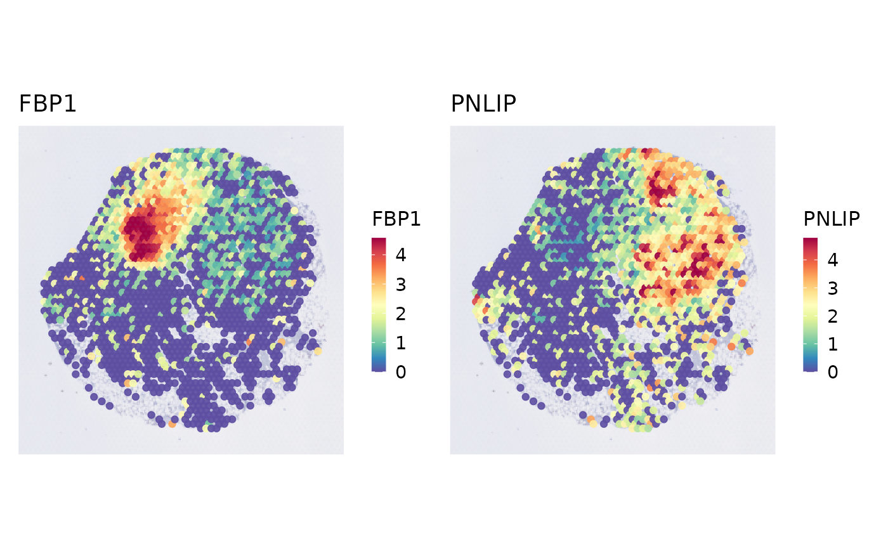
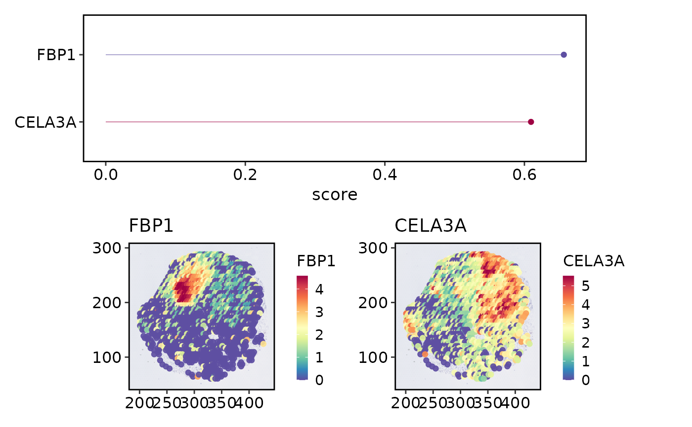

Run spatial variable feature detection
Source:R/RunSpatialVariableFeatures.R
RunSpatialVariableFeatures.RdScore genes by spot-level spatial autocorrelation. The native "moran" and
"geary" methods use a lightweight coordinate KNN graph. "SPARKX" and
"nnSVG" use optional external backends when their packages are installed.
Usage
RunSpatialVariableFeatures(
srt,
assay = NULL,
layer = "data",
features = NULL,
method = c("moran", "geary", "SPARKX", "nnSVG"),
image = NULL,
coord.cols = c("x", "y"),
k = 6,
nfeatures = 2000,
min_spots = 5,
nperm = 0,
set_variable_features = TRUE,
store_results = TRUE,
verbose = TRUE,
seed = 11,
...
)Arguments
- srt
A Seurat object.
- assay
Which assay to use. If
NULL, the default assay of the Seurat object will be used. When the object also containsChromatinAssay, the default assay and additionalChromatinAssaywill be preprocessed sequentially.- layer
Assay layer used for expression values.
- features
Features to score. If
NULL, current variable features are used; if no variable features are present, all assay features are used.- method
Spatial variable feature detection method.
- image
Name of the Seurat spatial image used by the spatial workflow. If
NULL, the first image is used when present.- coord.cols
Metadata coordinate columns used by the spatial workflow when no image is available.
- k
Number of nearest spatial neighbors per spot.
- nfeatures
Number of top spatial features stored in
srt@misc[["SpatialVariableFeatures"]].- min_spots
Minimum number of spots with non-zero expression required for a feature to be tested.
- nperm
Number of label permutations used for empirical p values. The default
0skips p-value calculation.- set_variable_features
Whether to set the top spatial features as variable features for
assay.- store_results
Whether to store the full result in
srt@tools.- verbose
Whether to print the message. Default is
TRUE.- seed
Random seed used for permutation tests.
- ...
Additional arguments passed to external backends.
Value
A Seurat object with spatial variable feature results stored in
srt@tools[["SpatialVariableFeatures"]] and top feature names stored in
srt@misc[["SpatialVariableFeatures"]].
Examples
data(visium_human_pancreas_sub)
spatial <- Seurat::NormalizeData(
visium_human_pancreas_sub,
assay = "Spatial",
verbose = FALSE
)
spatial <- Seurat::FindVariableFeatures(
spatial,
assay = "Spatial",
nfeatures = 100,
verbose = FALSE
)
SpatialSpotPlot(
spatial,
features = Seurat::VariableFeatures(spatial, assay = "Spatial")[1:2]
)

spatial <- RunSpatialVariableFeatures(
spatial,
assay = "Spatial",
nfeatures = 50
)
#> ◌ [2026-06-28 05:15:30] Running spatial variable feature detection
#> ✔ [2026-06-28 05:15:31] Stored 50 spatial variable features
SpatialVariableFeaturePlot(spatial, plot_type = "combined", nfeatures = 2)
